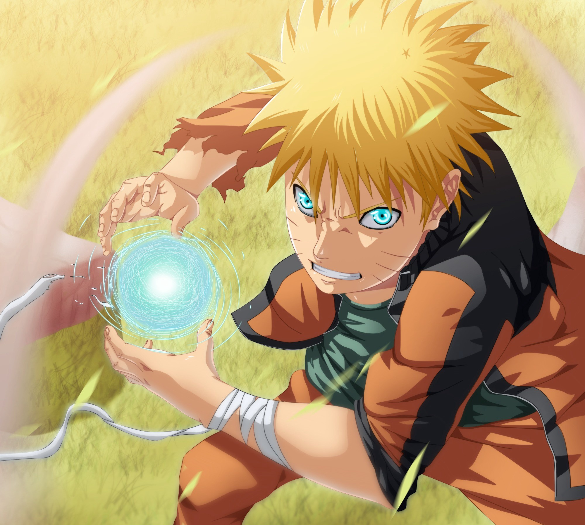
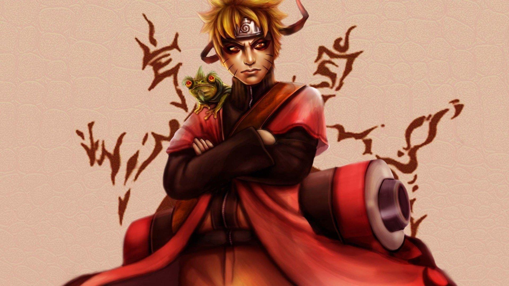

Naruto's potential too become hokage was first recognized when he stole the leaf village's book of powerful jutsu. Naruto used this book to perfect the multi shadow clone Jutsu

After months of rigorous training with master Jiraiya , Naruto finally masters the Rasengan. A move that his father mastered and perfected. This would only serve too push him further towards the path of being Hokage.

Upon the destruction of the leaf village, Naruto returns too fight pain. Sage Mode was naruto's only means of staying on par with pain. After the restoration of Konoha, Naruto was finally recognized as the strongest in the village